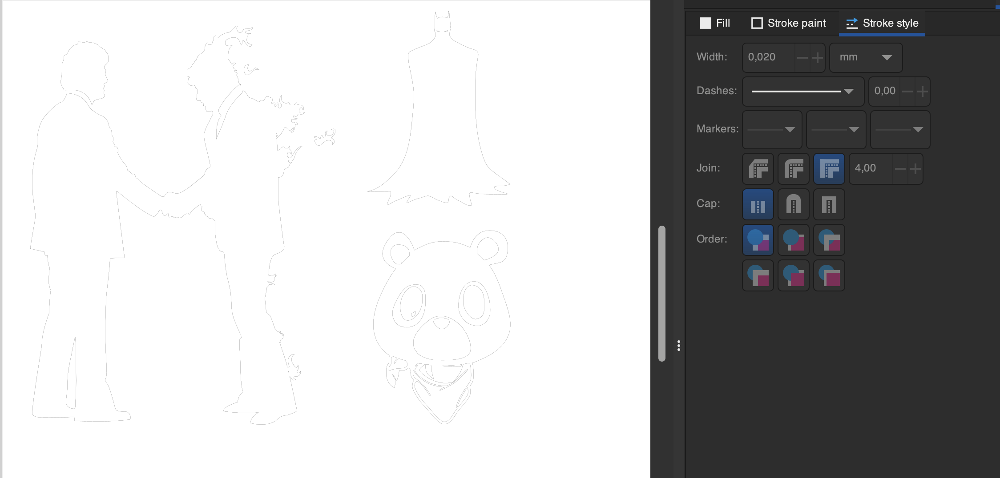
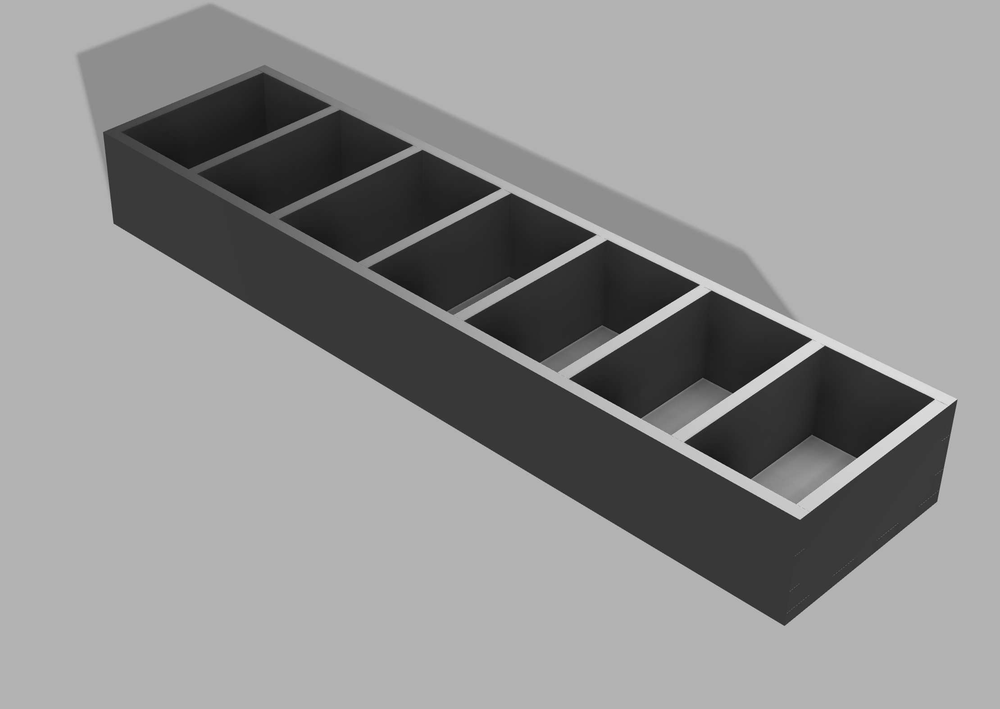

VERKEFNI 2 - Tölvustuddur skurður
HLUTI I - Nota vínylskerann til að búa til eitthvað
Lýsingin á þessum hluta verkefnisins var einstaklega einföld of bauð upp á mikið frelsi í framkvæmd: Notaðu vínylskerann til að búa til eitthvað. 100x50cm skurðarflötur max.
Ég ákvað að búa til límmiða á tölvuna mína líkt og margir samnemendur mínir en Vélalímmiðinn var það eina sem var á tölvunni minni, því miður þykir mér Vélalogoið ekkert sérstaklega fallegt svo hann fékk að fjúka fyrir 3 nýjum límmiðum sem voru þó samtals innan 100x50cm skurðflatar líkt og kom fram í verkefnalýsingu.
Fyrst á dagskrá var hugmyndavinnan sem tók sennilega mestan tíma í hluta 1 þar sem ég gat bara ekki ákveðið hvað ætti að fara á tölvuna. Ég tók 3 myndir af netinu og færði inn í Inkscape og notaði þar Trace bitmap (smelltu til að læra) til þess að Vectorizera myndirnar . Útkoman leit svona út eftir að myndirnar voru sameinaðar í eitt skjal og línurnar voru minnkaðar í 0,02 mm fyrir vínylskerann.
Þegar þetta ar klárt var komið að því að setja efni í vínylskerann og græja límmiðana. Ég valdi svart efni í vínylskerann og fékk hjálp kennara við að setja hann af stað. Útkoman var mjög góð og gekk skurðurinn hnökralaust. Þá var næst á dagskrá að koma límmiðanum yfir á tölvuna en það var gert með því að taka efnið af sem var utan um línurnar og taka svo einn límmiða í einu með málningarteipi, sem gerði ferlið töluvert auðveldara.
Hópverkefni - Kerf test
Lýsingin á þessum hluta verkefnisins var: Veljið geislaskera og ákvarðið með prófunum kerf fyrir þann skera. Skjalfestið á ykkar persónulegu vefsíður. Nemendur mega vinna saman 3 í hóp.
Aðferðin sem við notuðum til að finna kerf skerans í VR-III var að skera út 10 ferninga í röð á akrílplötu. Eftir að skorið hefði verið í efnið myndaðist bil eftir skerann sem var mælt og svo deilt niður á línurnar 11 í skurðinum. Prófunin gaf til kynna að Kerf væri um það bil 0,15 mm.
Hluti II - Parametrískt, geirnelgt módel
Lýsingin á þessum hluta verkefnisins var eftirfarandi: Hannaðu parametrískt, geirneglt (pressfit) módel af byggingareiningum. Módelið þarf að vera skalanlegt á mismunandi máta (efnisþykkt, hæðir og breiddir sem nemandi velur), útfært með góðum parametríum í hugbúnaði að eigin vali. Mælt er með Autodesk Fusion 360 ef nemandi vill fá aðstoð kennara, en hafi nemandi tök á því að nota annan CAD hugbúnað þá er það í góðu lagi. Hönnunin þarf að innihalda amk 3 geirnegldar festi punkta. Auka stig fyrir mismunandi gerðir af festingum.
Læra
Fyrsta mál á dagskrá var að læra á parametra og pressfit model í Autodesk Fusion, þá var horft á þetta myndband. Myndbandið hjálpaði virkilega mikið og virkuðu þær festingar ágætlega fyrir það verkefni sem ég hafði hugsað mér.
Hönnun
Ég ákvað að búa til eitthvað sem kæmi sér vel í mínu daglega lífi, vítamín box fyrir hvern dag vikunnar. Líkt og kom fram hér áðan nýtti ég þær festingar sem sýndar voru í myndbandinu ofar en bætti einnig við götum svo hægt væri að hafa hólf í boxinu. Ég passaði að skilgreina parametra vel í byrjun sem kom sér vel þar sem ég ákvað að breyta úr 4mm í 3mm akríl í lokin.
Hér er render af hönnuninni sem sýnir hvernig þetta á að líta út og hér fyrir neðan er svo hægt að sjá hvernig hver og einn partur á að vera.
Ferilskrá
Eftir að hafa eytt smá tíma í að setja upp heimasíðuna fór ég að vinna í ferilskránni sjálfri. Að mínu mati á ferilskrá að vera einföld og hnitmiðuð svo ég reyndi að gera hana svipaða og mína raunverulegu ferilskrá. Það sem skipti mig líka miklu máli var að hægt væri að sækja ferilskrána mína á PDF formi af síðunni svo ég bjó til takka sem gerði nákvæmlega það með eftirfarandi skipun.
<ul class="actions">
<li><a href="Verkefni1.pdf" class="button" download="ferilskra.pdf">Sækja ferilskrá á PDF</a></li>
</ul>
HLUTI III - Það sem ég vill fá úr áfanganum
Eftir að hafa klárað þennan áfanga vonast ég til þess að hafa góða vitneskju í þeim viðfangsefnum sem kennsluáætlunin nefnist á að verði kennd:
- Geislaskurður
- 3D prentun og skönnun
- Hönnunarforritun
- Fræsing og mótagerð
- Ofl
Það sem ég líka eftir að fá úr áfanganum er góð hugmynd að lokaverkefni, ef hugmyndin er góð og ég hef mikinn áhuga á henni veit ég að ég mun verja ótaltímum í það og læra á þeim tíma mjög mikið. Ég vonast til að geta fundið lokaverkefni sem hefur raunverulegt gildi fyrir mig í mínu hversdagslega lífi þar sem þá eru mestar líkur á að það verði skemmtilegt og metnaðarfullt!
HLUTI IV - Hlaðið upp á GitHub
Eftir að hafa skrifað þennan texta hlóð ég loks síðunni upp á Github Repositoryið mitt Þrátt fyrir að hafa verið búinn að hlaða niður og setja upp Git í tölvuna þá var bara svo svakalega fljótlegt fyrir mig að draga síðuna og allt sem fylgdi henni í einu lagi yfir á GitHub gluggann.
Leiðist þér?... Spilaðu Snake!
Það er vel skiljanlegt að nenna ekki að lesa allan þennan texta. Ég var sjálfur orðinn aðeins þreyttur á að skrifa þetta svo ég hugsaði ,,Hvað vantar á síðuna?" því gerði ég okkur greiða og setti upp Snake leikinn til að þú getir tekið þér pásu á að lesa. Smelltu HÉR til þess að spila leikinn. Kóðinn fyrir leikinn var fenginn hjá KT_Zheng á GitHub.